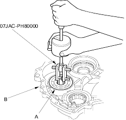
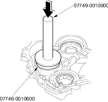
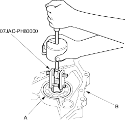
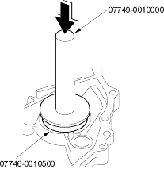

- Adjustable bearing remover set, 07JAC-PH80000
- Handle driver, 07749-0010000
- Driver attachment, 72 x 75 mm, 07746-0010600
- Remove the secondary gear shaft bearing (A) from the transmission housing (B) with the special tool.

- Install the new secondary gear shaft bearing until it bottoms in the transmission housing with the special tools.

- Adjustable bearing remover set, 07JAC-PH80000
- Handle driver, 07749-0010000
- Driver attachment, 62 x 68 mm, 07746-0010500
- Remove the secondary gear shaft bearing (A) from the flywheel housing (B) with the special tool.

- Install the new secondary gear shaft bearing until it bottoms in the flywheel housing with the special tools.
